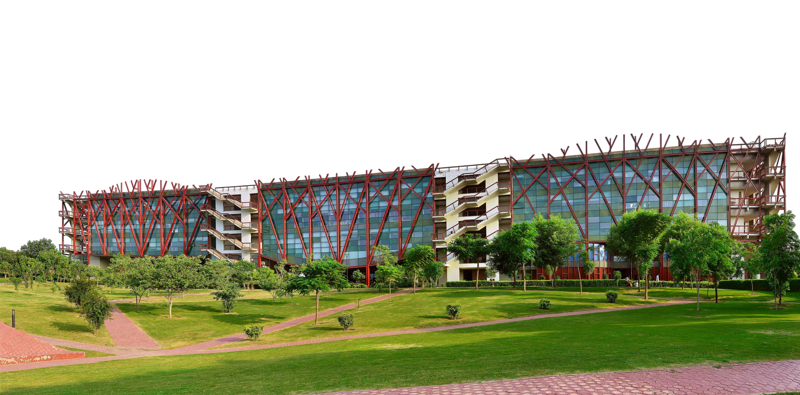
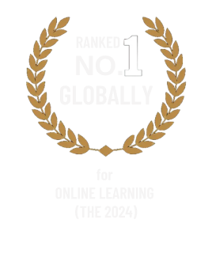

Programme Format
1-year, 100% online master’s designed for flexible and focused postgraduate learning. Conventional humanities programmes are longer and primarily campus-based, with greater dependence on physical classroom learning.
Digital tools, data, and critical thinking for culture, history, society, and human experiences
Jindal School of Liberal Arts and Humanities | O.P. Jindal Global University
APPLY NOW


The Digital World Needs More Than Technology. It Needs Human Understanding.
As technology reshapes how we create, preserve, analyse, and share knowledge, professionals need the ability to understand both digital systems and their social, cultural, and ethical implications.
The Master’s in Digital Humanities equips learners with interdisciplinary skills to explore digital research, storytelling, archives, data analysis, and public-facing scholarship.
The programme balances conceptual understanding with technical training through digital projects and capstone work. It enables learners to apply digital methods, research skills, and ethical technology practices across academic, cultural, media, and social impact sectors.
Explore the complete programme details.
Download the brochure or visit the website to view the detailed curriculum, course structure, credits, learning outcomes, and faculty profiles.
DOWNLOAD BROCHURE
Want the complete breakdown? Get detailed insights on fee plans, payment schedules, and financing options.
Graduates from Humanities, Social Sciences, Arts, Sciences, Design, or Technology backgrounds.
Early-career scholars and students interested in interdisciplinary research and digital methods.
Educators, researchers, and PhD aspirants looking to integrate digital tools into teaching, curriculum development, or academic publishing.
Professionals from museums, libraries, archives, NGOs, media, and cultural institutions.
Writers, journalists, content creators, designers, and technologists interested in digital storytelling and cultural work.
No prior coding experience is required. The programme welcomes learners from any undergraduate discipline who are eager to combine critical thinking with digital tools.
Eligibility based on undergraduate qualification.
Admission procedure as prescribed by the university.
1-year, 100% online master’s designed for flexible and focused postgraduate learning. Conventional humanities programmes are longer and primarily campus-based, with greater dependence on physical classroom learning.
Brings together history, literature, culture, society, technology, and digital methods. Conventional approaches are often centred around individual humanities disciplines with limited integration across digital fields.
Introduces digital methods as part of how learners research, analyse, interpret, and communicate human knowledge. Conventional approaches place greater emphasis on traditional research and interpretation methods.
Apply learning through digital storytelling, data visualisation, mapping, and digital archives. In a conventional approach, practical digital applications may play a smaller role in the overall learning experience.
Learn through research-driven digital projects that turn concepts into practical outputs. Conventional learning can be more focused on readings, academic research, and theoretical study.
Complete a research-based capstone aligned with your specialisation or area of interest. Conventional final research work is often structured around a predefined dissertation or academic research format.
Uses technology to open new ways of studying culture, society, history, and human experiences. In a conventional approach, technology may remain separate from the core humanities learning experience.
Designed for learners from diverse academic and professional backgrounds, with the flexibility of online study. Conventional programmes generally follow fixed academic schedules and campus-based structures.
Combine critical thinking with digital tools. No prior coding experience is required.
Integrate digital tools into teaching, curriculum development, academic publishing, or interdisciplinary research.
Build digital storytelling and cultural work across media and public-facing scholarship.
Work with museums, libraries, archives, and cultural institutions through digital archives and heritage practice.
Apply digital methods and ethical technology practices across social impact work.
Explore cultural and social applications of technology, including digital storytelling and cultural work.
Apply digital research skills in academic and research settings.
Work with digital archives and heritage collections.
Contribute to projects in museums and cultural institutions.
Bring research skills to digital policy and ethical technology practice.
Support teaching and learning through digital tools.
Shape publishing and content for cultural and media work.
Create public-facing storytelling and history projects with communities.
Apply digital methods in NGO and social impact work.


Reach out to know more about programmes, admissions, and opportunities